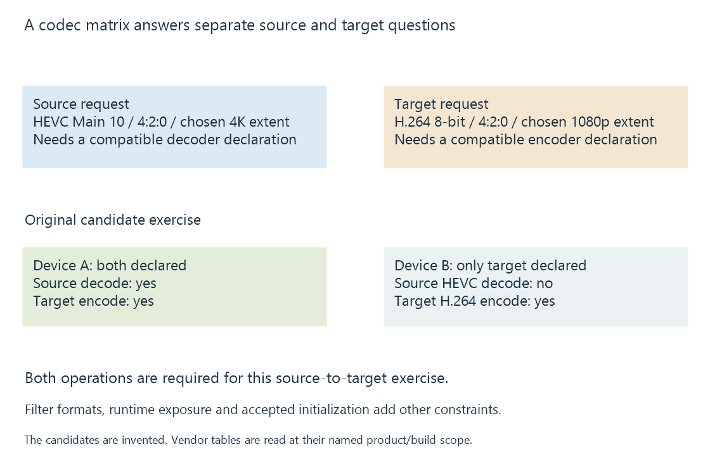

How to read a hardware codec support matrix
A hardware codec matrix relates a particular device or implementation to operation-specific codec, format and resource capabilities whose headings, legends and footnotes define the answer.
A support matrix answers a specific media-operation question. The useful result is a relationship among device, codec configuration, direction and the source's stated scope.
Before using a check mark to explain an Emby session, identify which operation the session needs.
Turn the source and target into separate questions
Consider an original conversion from 4K HEVC Main 10, 4:2:0 input to 1080p H.264 8-bit, 4:2:0 output.
The source needs HEVC reconstruction. The target needs H.264 encoding. Its scaling, colour processing and subtitle choices are additional requirements.
An invented two-device example makes that separation visible:
| Declared capability | Device A | Device B |
|---|---|---|
| HEVC Main 10, 4:2:0 decode at the chosen 4K size | Yes | No |
| H.264 8-bit, 4:2:0 decode | Yes | Yes |
| H.264 8-bit, 4:2:0 encode at the chosen 1080p size | Yes | Yes |
Both offer the output encoder. Only A offers the selected source decoder under these declarations.

This does not prevent a supported software decoder from supplying the input on B. It means the proposed hardware-only input path was not established.
Format qualifiers in the claim
Codec family is one field. Profile, bit depth, chroma subsampling, dimensions, level and relevant picture-order/tool support can refine the answer.
HEVC 4:2:0 ten-bit decoding does not answer HEVC 4:2:2 ten-bit decoding. A supported 1080p configuration does not identify an arbitrary 8K limit.
Likewise, a supported storage surface such as P010 describes the decoded-picture representation used by the next stage. It is not the same field as the compressed profile or a guarantee of HDR-to-SDR processing.
Use the legend rather than inventing a binary meaning
Intel's pinned Media Driver table distinguishes:
| Symbol | Meaning in that source |
|---|---|
| D | Hardware decoding |
| E | Its hardware/low-power encoding path |
| Es | Hardware plus shader-based encoding |
| Blank | No declaration in that cell of that table |
The source also separates Full-Feature and Free-Kernel builds. Combining their rows into one “yes” can lose a real implementation distinction.
From Meteor Lake, the source documents consolidation of the encoding entrypoint arrangement. An API entrypoint spelling is consequently not a universal physical-engine classification across all generations.
A blank in an implementation table should be retained as “not listed here,” with its build, version and product scope. Another hardware or API reference can have a different question and scope.
Check the exact chip and variant
NVIDIA's current matrix lists several GTX 1650 variants with different NVENC generations and HEVC B-frame support. A Turing family label alone does not resolve that difference.
Its Ampere A100 entry is another concrete example: it has decoder resources while the encoder table reports zero NVENC. Treating a powerful architecture name as proof of an encoder would give the wrong answer.
AMD's table similarly marks selected Navi24 products as decode-only despite their VCN-family context.
The exact row and its footnotes are therefore useful facts, not cosmetic details.
Engine count, session policy and capacity are different columns
Several physical encoders can improve aggregate available work. They do not necessarily give a one-engine-per-client limit or override a software session policy.
NVIDIA SDK 13.1 describes a twelve-session combined system limit for non-qualified cards and a resource-limited policy for qualified cards. That policy is another scope from codec support or an engine count.
Actual media demand, filters and memory determine whether a permitted workload can keep up. Concurrent encoder sessions develops those distinctions.
Preserve the implementation context
A manufacturer hardware reference, a driver feature table and a live API query describe different layers. The application also needs an integration that uses the exposed path.
See Also
- Hardware decoding and software decoding
- Hardware encoding and software encoding
- Driver-dependent media capabilities
- Concurrent encoder sessions, policy and capacity
- Intel Xe2 media capabilities: Lunar Lake and Battlemage
- NVIDIA Turing media capabilities